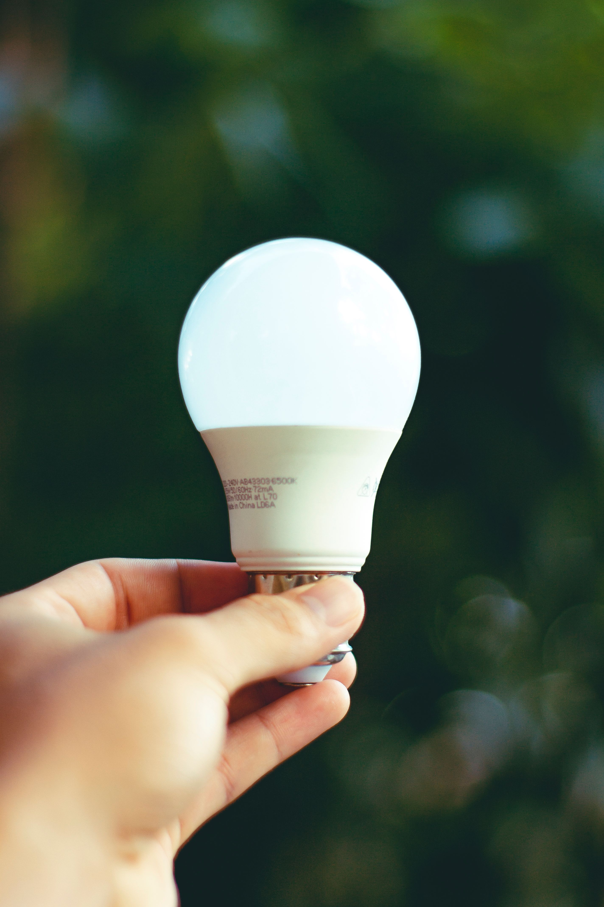

Energy & Water
Saving energy and water at home is one of the basic and easiest ways to live more sustainably. It mostly means noticing what is running and stopping what you don`t need.

Saving energy at home
Turn off unused lights
Switching off lights in empty rooms saves electricity straight away.
- Make it the last thing you do when you leaving the room.
Energy-efficient lighting
LED bulbs use much less electricity than old-style bulbs and lives longer.
- Replace bulbs as they broke.
Reduce heating waste
Heat escapes through gaps, open doors and windows.
- Close doors in heated rooms.
- Wear a jumper before turning the heater.
- Use curtains to keep warmth in.
Avoid standby power
Many devices use a little power even when they look switched off.
- Use a switched plug strip for the TV and console.
- Unplug chargers you are not using.
Saving water
Take shorter showers
Heating water takes energy, so a shorter shower saves both water and heat.
- Try a song-length shower.
Fix leaking taps
A slow drip wastes water day and night.
- Report or repair leaks as quick as you can.
Save water washing dishes
A running tap wastes a lot of water.
- Use a bowl, or run a full dishwasher.
Practical examples
Imagine leaving the house each morning. You check the lights, unplug the phone charger and close the living room door. It takes about thirty seconds, but you repeat it every day, so the saving grows through the year.
At the sink, a bowl of warm water uses far less than rinsing each plate under a running tap. Small examples like these show that saving resources is often just a habit.
Daily Energy Checklist
Read through this at the end of each day and see how many apply.
- Lights are off in rooms nobody is using.
- Chargers and unused devices are unplugged.
- The TV and computer are fully off, not on standby.
- Doors are closed to keep heat in.
- No taps are dripping or left running.
- The washing machine or dishwasher was full.